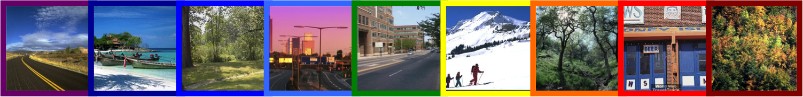

Attributes
Short course (tutorial) at CVPR 2013
Date: June 24th, 2013
Venue: Portland, Oregon
Instructors
Overview
Attributes are mid-level semantic visual concepts such as "furry", "natural", "tall", etc. that are shareable across categories. In the past few years, they have been used extensively in a variety of visual understanding tasks. This tutorial will try to define what attributes are, and explain how they differ from other visual concepts like scenes, objects or parts. It will also provide a comprehensive overview of the various ways in which attributes have been leveraged in literature. A clear and structured exposure to attributes within the context of related computer vision topics will be very valuable to graduate students interested in conducting research in visual recognition in general and/or in the use of attributes in particular. More senior researchers in different areas of computer vision interested in a "crash course" on the various efforts in literature -- on this now quite popular topic -- will also find this tutorial beneficial.
Schedule
Part 1 (video):
08:30 am to 09:00 am:
Introduction (slides: Parikh)
09:00 am to 10:00 am: Offline uses of attributes
(slides: Grauman)
10:00 am to 10:15 am: Q&A
10:15 am to 10:30 am: Break
Part 2 (video):
10:30 am to 11:00 am:
Offline uses of attributes (slides: Gupta)
11:00 am to 11:45 am: Online uses of attributes
(slides: Grauman)
11:45 am to 12:00 pm: Q&A
12:00 pm to 01:30 pm: Lunch
Part 3 (video):
01:30 pm to 03:25 pm: Attributes as features (slides: Farhadi, Berg, Grauman)
03:25 pm to 04:00 pm: Break
Part 4 (video):
04:00 pm to 04:45 pm:
Describing images (slides: Berg,
Farhadi)
04:45 pm to 05:30 pm: Discovering a vocabulary of
attributes (slides: Farhadi)
05:30 pm to 06:00 pm: Pointers to resources and
concluding remarks (slides: Parikh)
Feedback
Let us know what you thought of the tutorial and/or the material above. Please send any comments to parikh@vt.edu.